s = 3.116+ (JH)

s = 3.195+ (JH)
| n=1 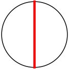 r = 1/2 = .500 | n=2 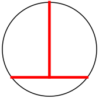 r = 5/8 = .625 | n=3 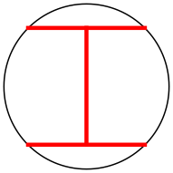 r = 1/√2 = .707+ | n=4 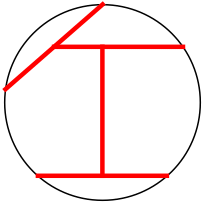 r = 5√377/128 = .758+ | n=5 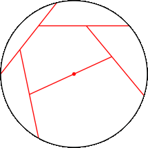 r = .808+ (JT) |
| n=6 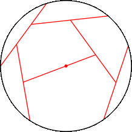 r = .844+ (JT) | n=7 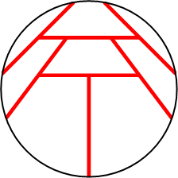 r = .869+ (MM) | n=8 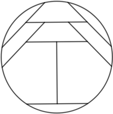 r = .900+ (JH) | n=9 r = .955+ (JH) |
| n=10 r = .976+ (JH) | n=11 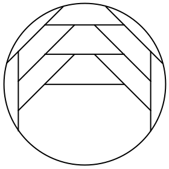 r = 1.020+ (RE) | n=12 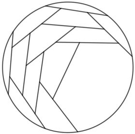 r = 1.039+ (JH) |
| n=1 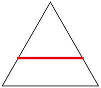 s = 3/2 = 1.500 | n=2 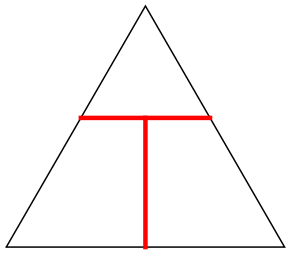 s = 1+2/√3 = 2.154+ | n=3 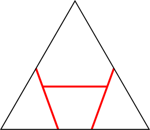 s = 2.288+ (MM) |
| n=4 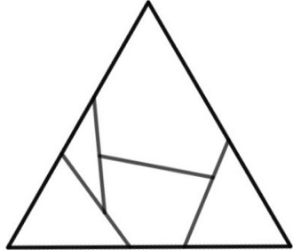 s = 2.443+ (JH) | n=9 s = 3.013+ (JH) |
| n=10 s = 3.116+ (JH) | n=11 s = 3.195+ (JH) |
| n=1 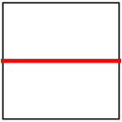 s = 1 | n=2 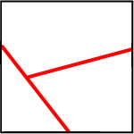 s = 1.192+ (MM) | n=3 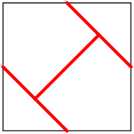 s = √2 = 1.414+ | n=4 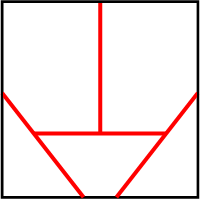 s = 1.480+ (MM) |
| n=5 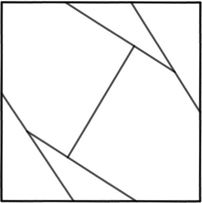 s = 1.531+ (JH) | n=6 s = 1.620+ (JH) | n=7 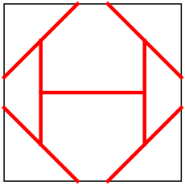 s = 1+1/√2 = 1.707+ | n=8 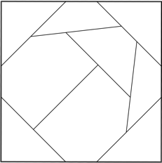 s = 1.754+ (JH) |
| n=12 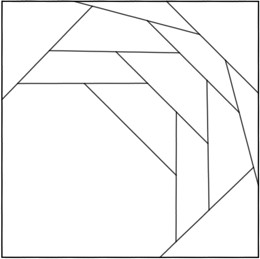 s = 1.971+ (JH) | n=14 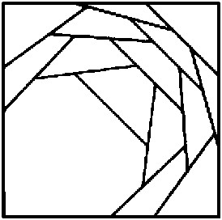 s = 2.076+ (JH) | n=19 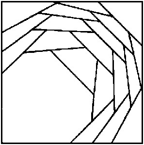 s = 2.254+ (JH) |
| n=1 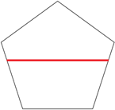 s = (5–√5)/4 = .690+ (JH) | n=2 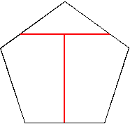 s = .885+ (JH) | n=3 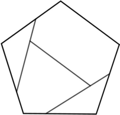 s = .969+ (JH) | n=4 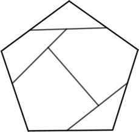 s = 1.093+ (JH) |
| n=1 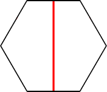 s = 1/√3 = .577+ (MM) | n=2 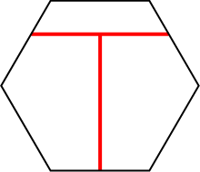 s = (3+2√3)/9 = .718+ (MM) | n=3 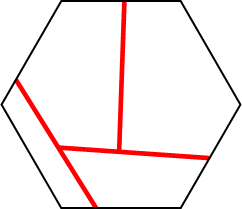 s = .790+ (MM) |
| n=4 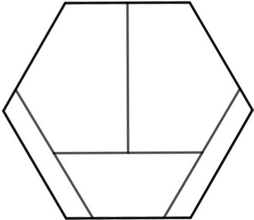 s = .830+ (JH) | n=7 s = 1.017+ (JH) |
If you can extend any of these results, please e-mail me. Click here to go back to Math Magic. Last updated 8/26/19.